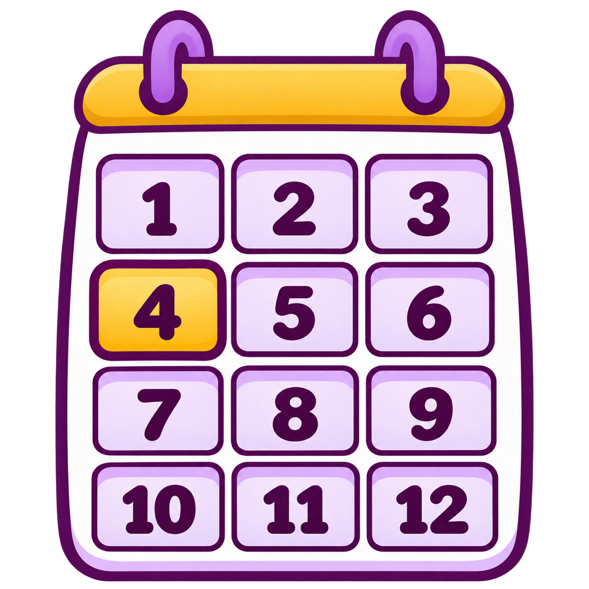

01 / 20

四月
しがつ
April
Generated · pending owner review
Open full size ↗Exact generation prompt and source details
Use case: style-transfer. Create a replacement vocabulary illustration for APRIL, 四月, a calendar MONTH, using the supplied approved calendar ONLY as the style reference. Replace 2011 and all day grids with a clear year-at-a-glance MONTH SELECTOR: exactly twelve equally sized rounded tiles arranged in three columns and four rows, containing the exact Arabic numbers 1 through 12 in row-major order, once each. Highlight ONLY tile 4 with a warm golden fill and a thick plum outline; other eleven tiles pale lavender/white. No calendar dates, no weekdays, no year number, no text outside the twelve numerals. Make month-selection visually different from a tear-off day/date page. Match the reference's charming polished illustrated style, rounded bold plum outlines, lavender, golden yellow and white palette, very restrained soft shading. Square isolated asset, generous transparent margin, clean crisp readable numerals. Transparent background with genuine alpha; no checkerboard, watermark or English/Japanese labels. Educational mathematical accuracy: exactly 12 month tiles, exactly one highlighted month, number 4.
Stable ID: ja-v-7dddc1af4eb5
SHA-256: 99f636e02228c7eed324185e9ac76513daf2f4c099db50a7697daae227e95da4
Manifest status: generated-pending-owner-review